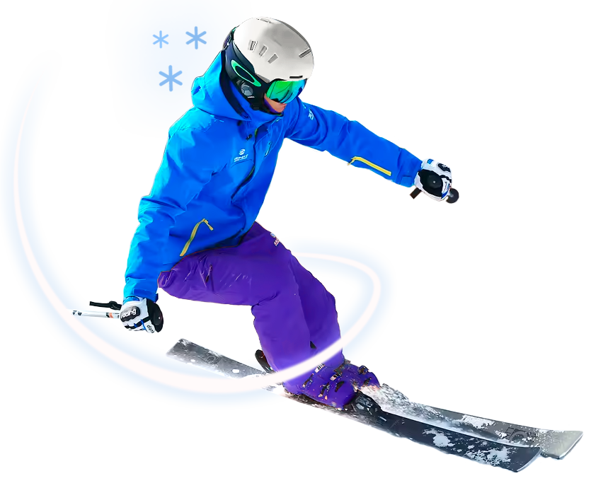
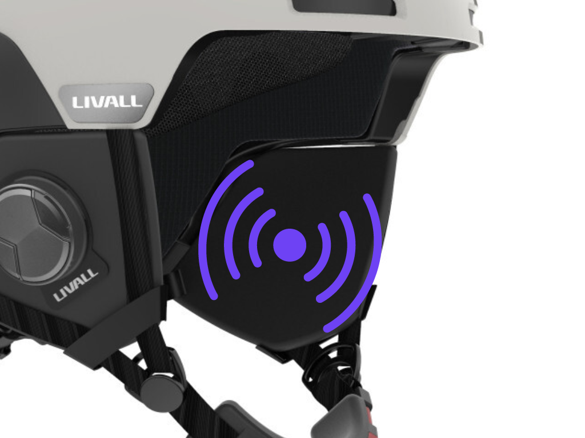
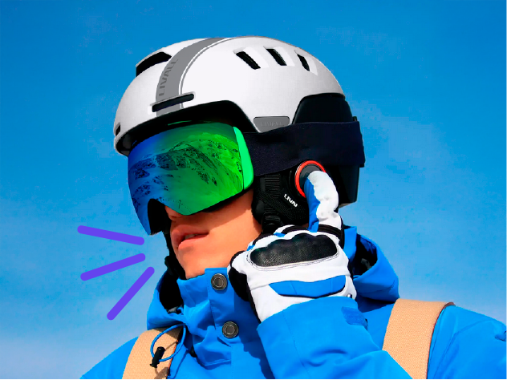
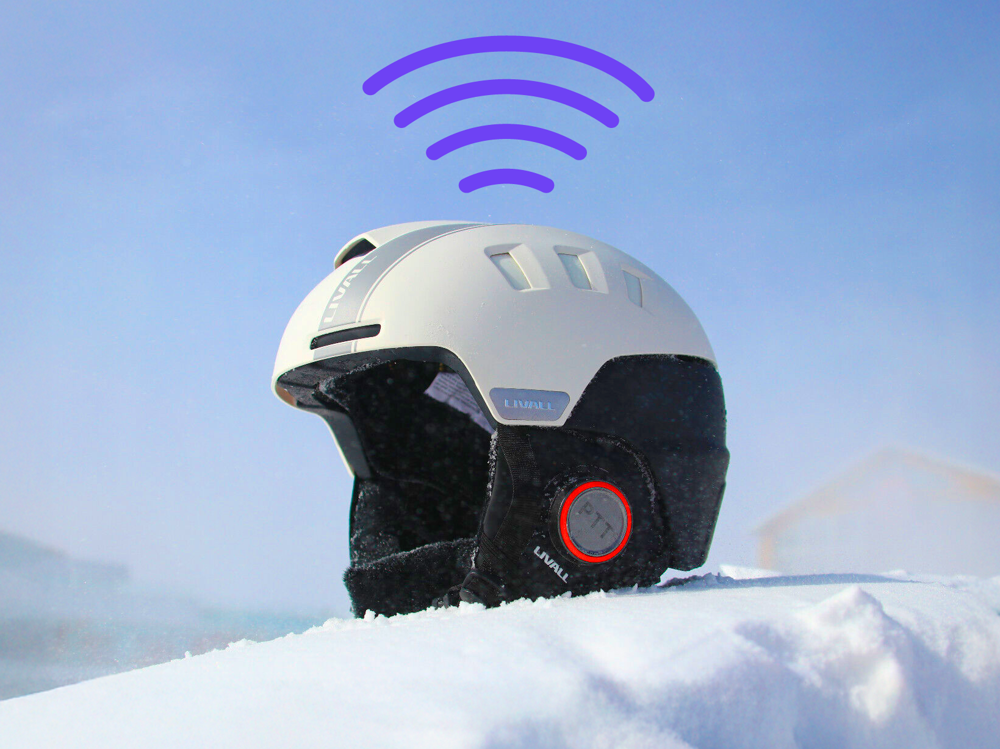

-20 °C
Alta resistencia a temperaturas extremas

15
Ventilaciones ajustables para gafas sin empañarse

750 GR
Peso ultraligero que garantiza comodidad

16 HS
Duración de la batería para un día de esquí

COMODIDAD EN LAS PISTAS
- Mantenete conectado con tu grupo mediante walkie-talkie integrado y comunicación Bluetooth.
- Detección automática de caídas, que envía alerta SOS con ubicación GPS a tus contactos.
- Cumple con las certificaciones internacionales EN1077 y ASTM F2040 para cascos de esquí.
TECNOLOGÍA A TU FAVOR

AUDIO PREMIUM
Altavoces estéreo integrados para música y llamadas con de reducción de ruido.

VOZ CLARA Y AUDIBLE
Micrófono cortavientos con cancelación de ruido: tu voz clara aun a 60 km/h.

SIEMPRE CERCA
Alarma anti-pérdida que alerta al móvil si te separas más de quince metros del casco.
EL SECRETO EN LOS DETALLES


CONTROL DESDE TU MÓVIL
LIVALL Skiing conecta tu casco con funciones que mejoran tu seguridad y rendimiento.
- Comunicación grupal con un solo clic para coordinar con tu equipo y recibir instrucciones.
- Registro completo de datos de esquí incluyendo velocidad, altitud, pendiente y rutas.